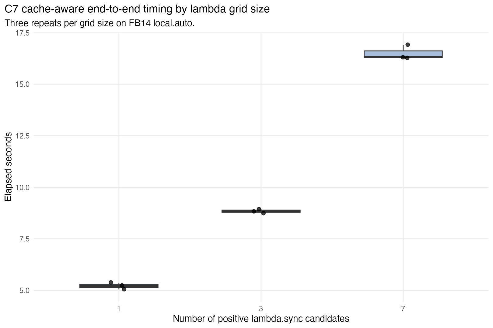
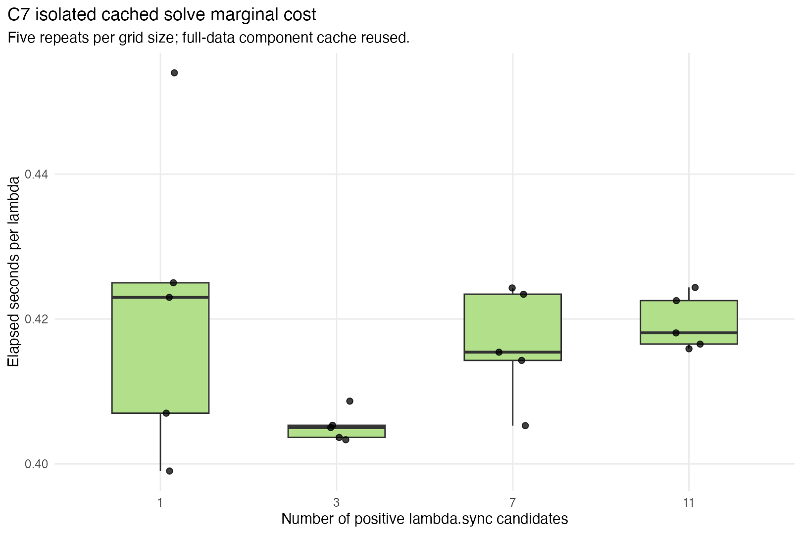
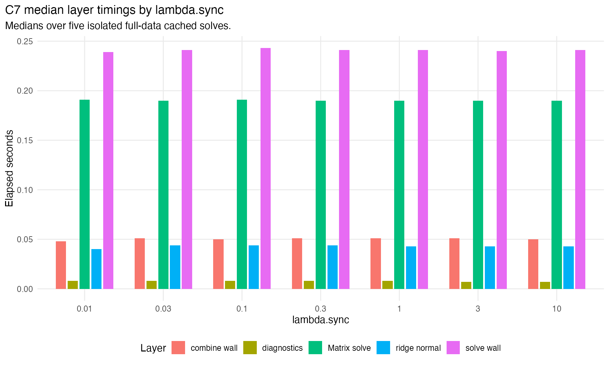

C7 uses repeated timings on the FB14 local.auto stress case to separate end-to-end lambda-grid cost from isolated cached solve cost. The goal is to decide whether the next phase should prioritize low-level sparse-solve optimization or smarter lambda-search policy.
| phase | elapsed_sec |
|---|---|
| prepare_frames | 1.405 |
| prepare_sync_rows | 0.034 |
| prepare_full_component_cache | 0.307 |
| prepare_fold_component_caches | 1.213 |

Full cache-aware fit.ps.lps() timing. Each point is one complete CV/diagnostic/final-fit run.
| grid_size | n_reps | elapsed_median_sec | elapsed_iqr_sec | elapsed_min_sec | elapsed_max_sec | per_lambda_median_sec |
|---|---|---|---|---|---|---|
| 1 | 3 | 5.218 | 0.158 | 5.045 | 5.361 | 5.218 |
| 3 | 3 | 8.829 | 0.104 | 8.742 | 8.95 | 2.943 |
| 7 | 3 | 16.319 | 0.3215 | 16.264 | 16.907 | 2.3313 |

Full-data component cache reused across lambda values. This isolates normal-matrix combination plus ridge solve/diagnostics.
| grid_size | n_reps | elapsed_median_sec | elapsed_iqr_sec | elapsed_min_sec | elapsed_max_sec | per_lambda_median_sec |
|---|---|---|---|---|---|---|
| 1 | 5 | 0.423 | 0.018 | 0.399 | 0.454 | 0.423 |
| 3 | 5 | 1.215 | 0.005 | 1.21 | 1.226 | 0.405 |
| 7 | 5 | 2.908 | 0.064 | 2.837 | 2.97 | 0.41543 |
| 11 | 5 | 4.599 | 0.066 | 4.575 | 4.668 | 0.41809 |

Median timings over five isolated cached solves. The split helps separate normal-matrix combination, ridge-normal formation, Matrix solve, and diagnostics.
| lambda_sync | combine_elapsed_sec | solve_elapsed_sec | reported_ridge_normal_sec | reported_solve_sec | reported_diagnostics_sec |
|---|---|---|---|---|---|
| 0.01 | 0.048 | 0.239 | 0.04 | 0.191 | 0.008 |
| 0.03 | 0.051 | 0.241 | 0.044 | 0.19 | 0.008 |
| 0.1 | 0.05 | 0.243 | 0.044 | 0.191 | 0.008 |
| 0.3 | 0.051 | 0.241 | 0.044 | 0.19 | 0.008 |
| 1 | 0.051 | 0.241 | 0.043 | 0.19 | 0.008 |
| 3 | 0.051 | 0.24 | 0.043 | 0.19 | 0.007 |
| 10 | 0.05 | 0.241 | 0.043 | 0.19 | 0.007 |
A simple linear fit to median end-to-end timings estimates about 1.853 seconds per additional lambda.sync candidate. The isolated full-data cached solve estimate is about 0.419 seconds per lambda. This means candidate search can save seconds per skipped lambda on this stress case. The recommended next engineering phase is to prototype a practical lambda-search policy before attempting invasive sparse-solver changes.